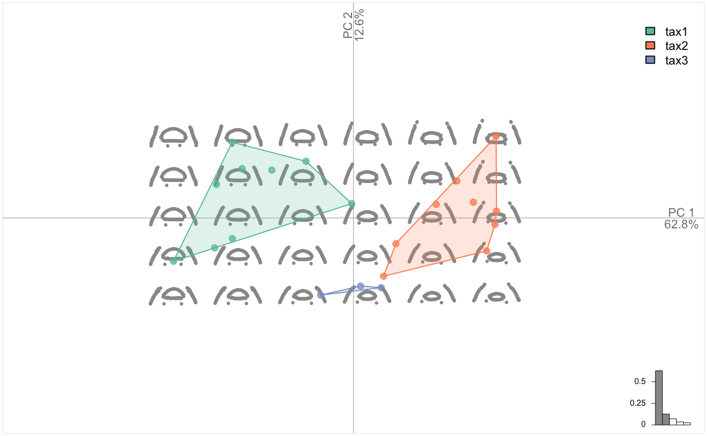
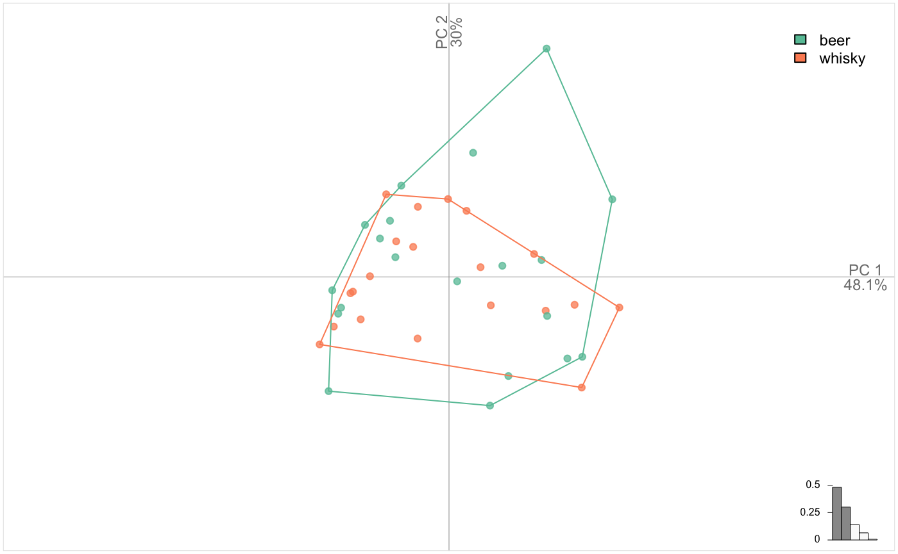
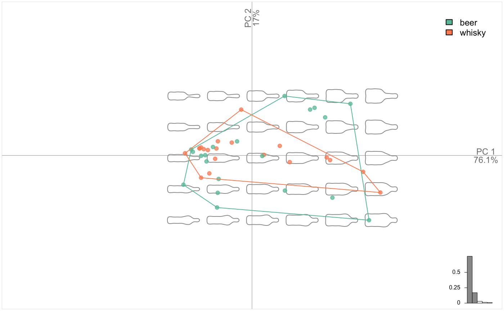
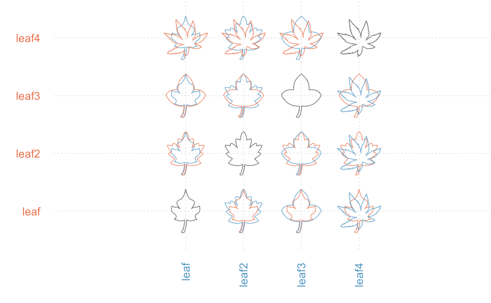

An introduction to Momocs
Vincent Bonhomme
2018-10-28
Source:vignettes/Momocs_intro.Rmd
Momocs_intro.RmdNews
As of Oct. 2018, Momocs is being extensively polished these days and may evolve before its 2.0 release as part of MomX.
Preliminaries
Abstract
Momocs aims to provide a complete and convenient toolkit for morphometrics. It is intended for scientists interested in describing quantitatively the shape, and its (co)variations, of the objects they study.
In the last decade, R has become the open-source lingua franca for statistics, and morphometrics known its so-called “revolution”. Nevertheless, morphometric analyses still have to be carried out using various software packages either dedicated to a particular morphometric and/or for which source code is mostly unavailable and/or copyrighted. Moreover, most of existing software packages cannot be extended and their bugs are hard to detect and thus correct. This situation is detrimental to morphometrics: time is wasted, analyses are restricted to available methods, and last but not least, are poorly reproducible. This impedes collaborative effort both in software development and in morphometric studies.
By gathering the common morphometric approaches in an open-source environment and welcoming contributions, Momocs is an attempt to solve this twofold problem.
Momocs hinges on the core functions published in the must-have Morphometrics with R by Julien Claude (2008), but has been further extended to allow other shape description systems. So far, configurations of landmarks, outlines and open outline analyses, along with some facilities for traditional morphometrics are implemented.
Prior to analysis, Momocs can be used to acquire and manipulate data or to import/export from/to other formats. Momocs also has the facility for a wide range of multivariate analyses and production of the companion graphics. Thus a researcher will find that just a few lines of code will provide initial results, but the methods implemented can be finely tuned and extended according to the user’s needs.
- If you use it, please cite it:
citation("Momocs"). - This citation refers to an obsolete version of Momocs, only handling outline analyses. The next companion, encompassing all MomX and seminal paper is on its way.
Survival tips
- This vignette introduces Momocs, as for every R function, each function has its own manual page, eg
?efourier. - There is a much nicer online version of this manual that can be accessed from the console with, e.g.
Momocs_help("efourier"). - Feel free to contribute to Momocs through GitHub: report issues, ask for new features, share data and methods, correct typos, write better vignettes, helpfiles, or whatever pleases you. If you have never heard of GitHub, that’s definitely worth a look.
- Feel free to drop me a line, should you need a hand or would like to collaborate with me:
bonhomme.vincent@gmail.com. - Before asking for help, please read Momocs’s FAQ:
vignette("Momocs_FAQ").
Get, install and use it
First, of all, let’s download the last version of Momocs. You will need to install the devtools package - if you do not have it yet - to get it from my GitHub repository :
The typical install_packages("Momocs") will get you the last CRAN version of Momocs, but the GitHub version is preferred as Momocs is still under active development.
We can start using Momocs, as long as it has been loaded using:
Design
Keywords used all accross Momocs are introduced here in bold.
Morphometrics is the ugly job of turning beautiful shapes into quantitative variables. Just kidding, that’s pretty exciting.
A shape is defined as a collection of (x; y) coordinates. No 3D yet but different families are handled by Momocs:
- outlines, here in a first-quarter moon ;
- open outlines, here is the sterile valve of an olive stone;
- configuration of landmarks; here, homologous points from a mosquito wing.
They are all single shapes defined by a matrix of (x; y) coordinates; here are the first points of the moon:
## [,1] [,2]
## [1,] 200 50
## [2,] 199 49
## [3,] 198 49
## [4,] 197 50
## [5,] 196 50
## [6,] 195 49Many operations on shapes are implemented such as: plotting, geometric operations, scalar descriptions, etc. These operations have their dedicated vignette, see vignette("Momocs_coo").
Working on single shape can quicly be boring. Shapes can be organized into a collection of coordinates: a Coo object that carries:
- a component named
$coo, alistof shapes (asmatrix.ces); - most of the time, a component named
$fac, adata.frame(or the modern equivalent, adata_frame) to store covariates, eitherfactors ornumerics; - possibly, other components of interest.
One can do several things with a Coo object: visualize it, apply morphometric operations, handle the data it contains, but in the end, a __ morphometric method__ will turn coordinates into coefficients.
Such morphometric operation on coordinates produce a collection of coefficients: a Coe object that carries:
- a component named
$coe, amatrixof coefficients; - if present in
Coo,$facis inherited; - possibly, other components of interest.
This can be summarized as follows:
Coo |
+ | Morphometric method | = | Coe |
|---|---|---|---|---|
(x; y) coordinates |
+ | appropriate method | = | quantitative variables |
Coo objects are collections of coordinates that become Coe objects when an appropriate morphometric method is applied on them.
Some operations on Coo/Coe are generic in that they do not depend of the nature of the shape. For instance, centering a configuration of landmarks or an outline, or calculating their centroid size is, mathematically, the same generic operation. But some operations on shapes are specific to a peculiar family. For instance, calculating elliptical Fourier transforms on a configuration of landmarks would make no sense.
Momocs implement this desirable behavior and defines classes and subclasses, as S3 objects.
Coo |
Morphometrics methods | Coe |
|---|---|---|
OutCoo (outlines) |
efourier, rfourier, sfourier, tfourier
|
OutCoe |
OpnCoo (open outlines) |
npoly, opoly, dfourier
|
OpnCoe |
LdkCoo (configuration of landmarks) |
fgProcrustes, slide
|
LdkCoe |
In other words:
- any collection of shapes belongs to (pick one)
{OutCoo, OpnCoo, LdkCoo}and is also aCooobject; - generic and specific methods can be applied to it
- a collection of coefficients is obtain and belongs to (pick one)
{OutCoe, OpnCoe, LdkCoe}and is also aCoeobject.
Finally, generic and specific operations can be applied to the Coe objects, chiefly multivariate methods, capitalicized: PCA, LDA, CLUST, MANOVA(and MANCOVA), MSHAPES, KMEANS, etc.
Overall, Momocs implements a simple and consistent grammar that is detailed below. Also, if you’re familiar with modern R and the Hadley-verse, you should feel home as ggplot2 graphics, dplyr verbs and magrittr pipes are implemented.
Single shapes
Let’s load one of the Momocs datasets, some various outlines (an Out object):
## Out (outlines)
## - 30 outlines, 836 +/- 255 coords (in $coo)
## - 0 classifiers (in $fac):
## # A tibble: 0 x 0
## - also: $ldkshapes is one of the datasets bundled with Momocs. It’s (“lazy”) loaded in memory as soon as you call it, no need for data(shapes). To see all Momocs’ datasets, try data(package="Momocs"). These datasets are all Coo objects (try class(bot)), ie collection of shapes.
One can do many things on a Coo object, as above, eg printing a summary of it (just by typing its name in the console), plotting a family picture with panel, etc.
So far, we’re interested in single shapes so let’s extract the 4th shape from shapes, using the traditional syntax. We plot it with coo_plot that comes with several options for plotting all families of shapes.

# coo_plot is the base plotter for shapes
# but it can be finely customized, see ?coo_plot
coo_plot(shp, col="grey80", border=NA, centroid=FALSE, main="Meow")Let’s now do some basic operations on this shape. They all named coo_* and you can have the full list with apropos("coo_"). coo_* family encompasses:
- geometric operations (such as centering, scaling, etc.)
- plotting functions
- scalar descriptors of shape (such as area, perimeter, circularity, rectilinearity, etc.)
- various other operations on a single shape.
Momocs is fully compatible with maggritr’s pipe operators. A nice introduction can be found there. magrittr requires a (very small) cerebral gymnastics at the beginning but the benefits are huge, for defining moprhometric pipelines in Momocs but also for R as a whole. It makes things clearer, it: saves typing; reduces intermediate variable assignation; reads from left to right; substantiates the pipe we (should) have in mind. magrittr’s pipes are already loaded with Momocs.
# pipes can be turned into custom function
cs64 <- function(x) x %>% coo_sample(64) %>% coo_scale() %>% coo_center()
shapes[4] %>% cs64 %>% coo_plot() # note the axesHave a look to the dedicated vignette with vignette("Momocs_coo").
The most familiar operation can directly be applied on Coo objects:
bot %>%
coo_center %>% coo_scale %>%
coo_alignxax() %>% coo_slidedirection("up") %T>%
print() %>% stack()## Out (outlines)
## - 40 outlines, 162 +/- 21 coords (in $coo)
## - 2 classifiers (in $fac):
## # A tibble: 40 x 2
## type fake
## <fct> <fct>
## 1 whisky a
## 2 whisky a
## 3 whisky a
## 4 whisky a
## 5 whisky a
## 6 whisky a
## # ... with 34 more rows
## - also: $ldkMorphometrics
Outline analysis
A word about data import: you can extract outlines from a list of black masks over a white background, as .jpg images with import_jpg. Have a look to helpfiles (import_jpg and import_jpg1) for more details. Here we do not bother with import since we will use the bottles outlines dataset bundled with Momocs.
## Out (outlines)
## - 40 outlines, 162 +/- 21 coords (in $coo)
## - 2 classifiers (in $fac):
## # A tibble: 40 x 2
## type fake
## <fct> <fct>
## 1 whisky a
## 2 whisky a
## 3 whisky a
## 4 whisky a
## 5 whisky a
## 6 whisky a
## # ... with 34 more rows
## - also: $ldkHere, we will illustrate outline analysis with elliptical Fourier transforms (but the less used and tested rfourier, sfourier and tfourier are also implemented).
The idea behind elliptical Fourier transforms is to fit the x and y coordinates separately, that is the blue and red curves below:
## # A tibble: 138 x 2
## dx dy
## <dbl> <dbl>
## 1 0 0
## 2 3 -21
## 3 3 -32
## 4 6 -53
## 5 9 -74
## 6 11 -84
## 7 15 -105
## 8 17 -126
## 9 20 -147
## 10 22 -158
## # ... with 128 more rowsGraphically, this is equivalent to fitting Ptolemaic ellipses on the plane, try the following:
Let’s calibrate the number of harmonics required. More details can be found in their respective help files. Try the following:
Here, 10 harmonics gather 99% of the harmonic power. If you’re happy with this criterium, you can even omit nb.h in efourier: that’s the default parameter, returned with a message.
## An OutCoe object [ elliptical Fourier analysis ]
## --------------------
## - $coe: 40 outlines described, 10 harmonics
## # A tibble: 40 x 2
## type fake
## <fct> <fct>
## 1 whisky a
## 2 whisky a
## 3 whisky a
## 4 whisky a
## 5 whisky a
## 6 whisky a
## # ... with 34 more rowsbot.f is a Coe object (and even an OutCoe), you have have a look to the help files to go deeper into Momocs classes.
You can have a look to the amplitude of fitted coefficients with:
Now, we can calculate a PCA on the Coe object and plot it, along with morphospaces, calculated on the fly.
## [1] "PCA" "prcomp"Amazing but we will do much better afterwards.
The question of normalization in elliptical Fourier transforms is central: have a look to ?efourier.
You can also drop some harmonics with rm_harm. And methods that removes the bilateral (a)symmetry are implemented: rm_asym and rm_sym, while symmetry calculates some related indices.
Open outlines
Open outlines are curves. Methods actually implemented are:
-
npolythat fit natural polynomials; -
opolythat fit orthogonal (also called Legendre’s) polynomials; -
dfourierfor the discrete cosine transform.
Note that opoly and npoly can only be used on simple curves, curves that have at most one y for any x coordinates, at least under a given orientation. dfourier can fit complex curves, curves “that back on their feets”.
Here, we will work on the fertile valves of olive stones, a (very partial) dataset provided by my colleagues Terral, Ivorra, and others.
They have two orthogonal views (a lateral and a dorsal view). See the paper cited in ?olea for more details. Let’s explore it a bit:

## Opn (curves)
## - 210 curves, 99 +/- 4 coords (in $coo)
## - 4 classifiers (in $fac):
## # A tibble: 210 x 4
## var domes view ind
## <fct> <fct> <fct> <fct>
## 1 Aglan cult VD O10
## 2 Aglan cult VL O10
## 3 Aglan cult VD O11
## 4 Aglan cult VL O11
## 5 Aglan cult VD O12
## 6 Aglan cult VL O12
## # ... with 204 more rows
## - also: $ldkNow, we gonna calculate opoly on it and plot the result of the PCA. Notice how consistent is the grammar and the objects obtained:
op <- opoly(olea) # orthogonal polynomials
class(op) # an OpnCoe, but also a Coe
op.p <- PCA(op) # we calculate a PCA on it
class(op.p) # a PCA object
op %>% PCA %>% plot(~domes+var) # notice the formula interface to combine factors
## [1] "OpnCoe" "Coe"
## [1] "PCA" "prcomp"But this is perfectly wrong! We merged the two views are if they were different individuals. Momocs can first chop or filter the whole dataset to separate the two views, do morphometrics on them, and combine them afterwards.
with(olea$fac, table(view, var))
# we drop 'Cypre' since there is no VL for 'Cypre' var
olea %>% filter(var != "Cypre") %>%
# split, do morphometrics, combine
chop(~view) %>% opoly %>% combine() %T>%
# we print the OpnCoe object, then resume to the pipe
print() %>%
# note the two views in the morphospace
PCA() %>% plot_PCA(~var)
## var
## view Aglan Cypre MouBo1 PicMa
## VD 30 30 30 30
## VL 30 0 30 30
## An OpnCoe object [ combined: opoly + opoly analyses ]
## --------------------
## - $coe: 90 open outlines described
## - $baseline1: (-0.5; 0; -0.5; 0)
## - $baseline2: (0.5; 0; 0.5; 0)
## # A tibble: 90 x 4
## var domes view ind
## <fct> <fct> <fct> <fct>
## 1 Aglan cult VD O10
## 2 Aglan cult VD O11
## 3 Aglan cult VD O12
## 4 Aglan cult VD O13
## 5 Aglan cult VD O14
## 6 Aglan cult VD O15
## # ... with 84 more rowsNow the PCA is done on the combination of two OpnCoe objects, each one resulting from an independant opoly call. That is the meaning of the [ combined: opoly + opoly analyses ] printed by the pipe above. Momocs can combine up to four different views.
Configuration of landmarks
_Landmarks methods are still quite experimental (i.e. not tested extensively)
Let’s have a look to graphics facilities and apply a full generalized Procrustes adjustment:

Sliding landmarks are supported and rely on geomorph package by Adams and colleagues.

##
|
| | 0%
|
|============= | 20%
|
|========================== | 40%
|
|======================================= | 60%
|
|==================================================== | 80%
|
|=================================================================| 100%Again, the grammar is consistent for landmarks.
Traditional morphometrics
Traditional morphometrics lose geometries: from the variables, you can’t unambiguously reconstruct the shape. Every shape is described by a combination of measurements, (inter landmark distance, quantitative variables, scalar descriptor, etc.)
Momocs provides some basics utilities to work with such objects in the TraCoe class. There is not TraCoo per se but it can be obtained from any Coo with the measure method. Let’s take the hearts dataset that comes from handdrawn heart shapes from my former colleagues at the French Intitute of Pondicherry:
## Out (outlines)
## - 240 outlines, 80 +/- 0 coords (in $coo)
## - 1 classifiers (in $fac):
## # A tibble: 240 x 1
## aut
## <fct>
## 1 ced
## 2 ced
## 3 ced
## 4 ced
## 5 ced
## 6 ced
## # ... with 234 more rows
## - also: $ldkNotice that there are 4 landmarks defined on them. Such landmarks on outlines can be: defined withdef_ldk(), retrieved with get_ldk(), and overall used to align outlines with fgProcrustes(). You can compare: hearts %>% stack() with hearts %>% fgProcrustes() %>% coo_slide(ldk=1) %>% stack().
Let’s describe these hearts with scalar descriptors: area, circularity and the distance between the 1st and the 3rd bumps of the hearts. measure is of great help. Note the loadings.
ht <- measure(hearts, coo_area, coo_circularity, d(1, 3))
class(ht)
ht$coe
ht %>% PCA() %>% plot_PCA(~aut)## [1] "TraCoe" "Coe"
## # A tibble: 240 x 3
## area circularity d1.3
## * <dbl> <dbl> <dbl>
## 1 0.627 14.0 0.0695
## 2 0.593 14.5 0.0639
## 3 0.611 16.1 0.0699
## 4 0.539 15.7 0.0627
## 5 0.541 13.6 0.0613
## 6 0.611 16.0 0.0692
## 7 0.617 16.5 0.0755
## 8 0.535 15.8 0.0655
## 9 0.521 14.3 0.0622
## 10 0.546 15.2 0.0642
## # ... with 230 more rowsAgain, there are plenty of scalar descriptors of shape, which names starts with coo_*, apropos("coo_"). Have a look to the coo_vignette, see vignette("Momocs_coo").
Such a TraCoe is provided in the flower dataset which is simply a rearranged iris. Once again, note the grammar consistency.
You can build your own TraCoe with coo_scalars:

Note that, by default, PCA on TraCoe object first centers and scales variables. This can be changed, see ?PCA.
Multivariate statistics
This section will mainly be illustrated with bot, and consequently outline analysis, but it works exactly the same on any Coe object, resulting from open outlines, configuration of landmarks, traditional morphometrics, etc.
PCA: Principal Component Analysis
Let’s see the main components of shape variability with a Principal Component Analysis.

Morphological spaces are reconstructed on the fly with plot.PCA. We call it plot.PCA because it uses the familiar plot but on the particular PCA class (type class(bot.p)). We may want to display the two groups saved in bot$fac. Just type the id of the column or its name.

See ?plot_PCA for much more complex graphics. And also these helper functions for the PCA class:
You can also export the PCA object as a .txt file (see ?export) or as a data_frame for further use with R with:
## # A tibble: 40 x 5
## type fake PC1 PC2 PC3
## <fct> <fct> <dbl> <dbl> <dbl>
## 1 whisky a -0.0528 -0.0231 0.00245
## 2 whisky a -0.0369 0.00725 -0.00866
## 3 whisky a 0.0809 -0.00479 -0.00222
## 4 whisky a -0.0694 0.00229 -0.0158
## 5 whisky a -0.0112 0.0476 -0.0127
## 6 whisky a 0.115 -0.0170 -0.0103
## 7 whisky a -0.0443 -0.0186 -0.00496
## 8 whisky a 0.0287 0.00996 -0.0114
## 9 whisky a 0.0123 0.000603 0.00364
## 10 whisky a -0.0458 0.00564 -0.00889
## # ... with 30 more rowsBy the way, you can use Momocs plotters to plot non-morphometric datasets. Using a TraCoe object is an option, but PCA also works fine. Let’s see an example with iris dataset:
LDA: Linear Discriminant Analysis
We can also calculate a Linear Discriminant Analysis on the PCA scores, or on the Coe object, directly on the matrix of coefficients (and results may be better yet we may encounter collinearity between variables). Try the following:
#LDA(bot.f, 1)
# we work on PCA scores
bot.l <- LDA(bot.p, 1)
# print a summary, along with the leave-one-out cross-validation table.
bot.l
# a much more detailed summary
bot.l %>% summary
# plot.LDA works pretty much with the same grammar as plot.PCA
# here we only have one LD
plot(bot.l)
# plot the cross-validation table
plot_CV(bot.l) # tabular versionYou can also export turn it into a data_frame with as_df.
MANOVA: Multivariate Analysis of (co)variace
We can test for a difference in the distribution of PC scores with:
## Df Hotelling-Lawley approx F num Df den Df Pr(>F)
## fac 1 2.8388 12.977 7 32 8.88e-08 ***
## Residuals 38
## ---
## Signif. codes: 0 '***' 0.001 '**' 0.01 '*' 0.05 '.' 0.1 ' ' 1We can also calculate pairwise combination between every levels of a fac. Here we just have two levels, so a single pairwise combination but the syntax is:
## $stars.tab
## beer whisky
## beer ***
##
## $summary (see also $manovas)
## Df Pillai approx F num Df den Df Pr(>F)
## beer - whisky 1 0.7395 12.98 7 32 8.88e-08If we want a MANCOVA instead :
## Df Hotelling-Lawley approx F num Df den Df Pr(>F)
## fac 1 0.32229 1.4733 7 32 0.212
## Residuals 38
CLUST: Hierarchical clustering
A hierarchical classification now. It relies on dist + hclust + ape::plot.phylo.
Monophyly is plotted by default. Many options can be found in ?CLUST
KMEANS: K-means clustering
A very minimal k-means clustering is implemented:
## K-means clustering with 5 clusters of sizes 5, 5, 6, 18, 6
##
## Cluster means:
## PC1 PC2
## 1 0.06730453 0.050371247
## 2 0.02497106 -0.006671549
## 3 -0.02673158 0.017713990
## 4 -0.05066899 -0.008418168
## 5 0.10184224 -0.028875902
##
## Clustering vector:
## brahma caney chimay corona deusventrue
## 4 3 5 4 3
## duvel franziskaner grimbergen guiness hoegardeen
## 5 4 2 2 4
## jupiler kingfisher latrappe lindemanskriek nicechouffe
## 4 4 5 3 3
## pecheresse sierranevada tanglefoot tauro westmalle
## 4 2 5 4 4
## amrut ballantines bushmills chivas dalmore
## 4 5 4 1 1
## famousgrouse glendronach glenmorangie highlandpark jackdaniels
## 4 4 4 5 2
## jb johnniewalker magallan makersmark oban
## 3 4 4 1 4
## oldpotrero redbreast tamdhu wildturkey yoichi
## 1 1 4 3 2
##
## Within cluster sum of squares by cluster:
## [1] 0.002720829 0.001916822 0.001886406 0.007905382 0.006121728
## (between_SS / total_SS = 88.6 %)
##
## Available components:
##
## [1] "cluster" "centers" "totss" "withinss"
## [5] "tot.withinss" "betweenss" "size" "iter"
## [9] "ifault"
MSHAPES: Mean shapes
We can retrieve the mean shapes, group wise (if a fac is specified), or the global mean shape (if omitted). It works from the Coe object:
# mean shape, per group
bot.ms <- MSHAPES(bot.f, ~type)
# lets rebuild an Out
Out(bot.ms$shp) %>% panel(names=TRUE)# or individual shapes
beer <- bot.ms$shp$beer %>% coo_plot(border="blue")
whisky <- bot.ms$shp$whisky %>% coo_draw(border="red")We can also plot a pairwise comparison of them:

Manipulating objects
One common yet boring task of morphometrics consists in handling datasets: add new information, remove some individuals, etc.
Momocs adapts dplyr verbs to its objects, and add new ones. If you have never heard of dplyr, let’s have a look to its introduction there, this may change your (R) life.
## Opn (curves)
## - 210 curves, 99 +/- 4 coords (in $coo)
## - 4 classifiers (in $fac):
## # A tibble: 210 x 4
## var domes view ind
## <fct> <fct> <fct> <fct>
## 1 Aglan cult VD O10
## 2 Aglan cult VL O10
## 3 Aglan cult VD O11
## 4 Aglan cult VL O11
## 5 Aglan cult VD O12
## 6 Aglan cult VL O12
## # ... with 204 more rows
## - also: $ldk
mutate: add new columns
## Opn (curves)
## - 210 curves, 99 +/- 4 coords (in $coo)
## - 5 classifiers (in $fac):
## # A tibble: 210 x 5
## var domes view ind fake
## <fct> <fct> <fct> <fct> <fct>
## 1 Aglan cult VD O10 a
## 2 Aglan cult VL O10 a
## 3 Aglan cult VD O11 a
## 4 Aglan cult VL O11 a
## 5 Aglan cult VD O12 a
## 6 Aglan cult VL O12 a
## # ... with 204 more rows
## - also: $ldk
slice: select individuals based on their position
## Opn (curves)
## - 5 curves, 99 +/- 4 coords (in $coo)
## - 4 classifiers (in $fac):
## # A tibble: 5 x 4
## var domes view ind
## <fct> <fct> <fct> <fct>
## 1 Aglan cult VD O10
## 2 Aglan cult VL O10
## 3 Aglan cult VD O11
## 4 Aglan cult VL O11
## 5 Aglan cult VD O12
## - also: $ldk## Opn (curves)
## - 110 curves, 99 +/- 4 coords (in $coo)
## - 4 classifiers (in $fac):
## # A tibble: 110 x 4
## var domes view ind
## <fct> <fct> <fct> <fct>
## 1 PicMa cult VD O15
## 2 PicMa cult VL O15
## 3 PicMa cult VD O16
## 4 PicMa cult VL O16
## 5 PicMa cult VD O17
## 6 PicMa cult VL O17
## # ... with 104 more rows
## - also: $ldk
filter: select individual based on a logical condition
## Opn (curves)
## - 150 curves, 99 +/- 3 coords (in $coo)
## - 4 classifiers (in $fac):
## # A tibble: 150 x 4
## var domes view ind
## <fct> <fct> <fct> <fct>
## 1 Aglan cult VD O10
## 2 Aglan cult VL O10
## 3 Aglan cult VD O11
## 4 Aglan cult VL O11
## 5 Aglan cult VD O12
## 6 Aglan cult VL O12
## # ... with 144 more rows
## - also: $ldk## Opn (curves)
## - 90 curves, 99 +/- 4 coords (in $coo)
## - 4 classifiers (in $fac):
## # A tibble: 90 x 4
## var domes view ind
## <fct> <fct> <fct> <fct>
## 1 Aglan cult VD O10
## 2 Aglan cult VL O10
## 3 Aglan cult VD O11
## 4 Aglan cult VL O11
## 5 Aglan cult VD O12
## 6 Aglan cult VL O12
## # ... with 84 more rows
## - also: $ldk## Opn (curves)
## - 120 curves, 99 +/- 3 coords (in $coo)
## - 4 classifiers (in $fac):
## # A tibble: 120 x 4
## var domes view ind
## <fct> <fct> <fct> <fct>
## 1 PicMa cult VD O10
## 2 PicMa cult VL O10
## 3 PicMa cult VD O11
## 4 PicMa cult VL O11
## 5 PicMa cult VD O12
## 6 PicMa cult VL O12
## # ... with 114 more rows
## - also: $ldk## Opn (curves)
## - 60 curves, 97 +/- 4 coords (in $coo)
## - 4 classifiers (in $fac):
## # A tibble: 60 x 4
## var domes view ind
## <fct> <fct> <fct> <fct>
## 1 Aglan cult VL O10
## 2 Aglan cult VL O11
## 3 Aglan cult VL O12
## 4 Aglan cult VL O13
## 5 Aglan cult VL O14
## 6 Aglan cult VL O15
## # ... with 54 more rows
## - also: $ldk# or on operation on numeric, here a dummy numeric column
olea %>% mutate(foo=1:210) %>% filter(foo<12)## Opn (curves)
## - 11 curves, 99 +/- 5 coords (in $coo)
## - 5 classifiers (in $fac):
## # A tibble: 11 x 5
## var domes view ind foo
## <fct> <fct> <fct> <fct> <int>
## 1 Aglan cult VD O10 1
## 2 Aglan cult VL O10 2
## 3 Aglan cult VD O11 3
## 4 Aglan cult VL O11 4
## 5 Aglan cult VD O12 5
## 6 Aglan cult VL O12 6
## # ... with 5 more rows
## - also: $ldk## Opn (curves)
## - 105 curves, 99 +/- 4 coords (in $coo)
## - 5 classifiers (in $fac):
## # A tibble: 105 x 5
## var domes view ind foo
## <fct> <fct> <fct> <fct> <int>
## 1 PicMa cult VL O17 106
## 2 PicMa cult VD O18 107
## 3 PicMa cult VL O18 108
## 4 PicMa cult VD O19 109
## 5 PicMa cult VL O19 110
## 6 PicMa cult VD O1 111
## # ... with 99 more rows
## - also: $ldk
select: pick, reorder columns from the $fac
# reorder columns
select(olea, view, domes, var, ind)
# drop some and show the use of numeric index
select(olea, 1, Ind=ind)
# drop one
select(olea, -ind)## Opn (curves)
## - 210 curves, 99 +/- 4 coords (in $coo)
## - 4 classifiers (in $fac):
## # A tibble: 210 x 4
## view domes var ind
## <fct> <fct> <fct> <fct>
## 1 VD cult Aglan O10
## 2 VL cult Aglan O10
## 3 VD cult Aglan O11
## 4 VL cult Aglan O11
## 5 VD cult Aglan O12
## 6 VL cult Aglan O12
## # ... with 204 more rows
## - also: $ldk
## Opn (curves)
## - 210 curves, 99 +/- 4 coords (in $coo)
## - 2 classifiers (in $fac):
## # A tibble: 210 x 2
## var Ind
## <fct> <fct>
## 1 Aglan O10
## 2 Aglan O10
## 3 Aglan O11
## 4 Aglan O11
## 5 Aglan O12
## 6 Aglan O12
## # ... with 204 more rows
## - also: $ldk
## Opn (curves)
## - 210 curves, 99 +/- 4 coords (in $coo)
## - 3 classifiers (in $fac):
## # A tibble: 210 x 3
## var domes view
## <fct> <fct> <fct>
## 1 Aglan cult VD
## 2 Aglan cult VL
## 3 Aglan cult VD
## 4 Aglan cult VL
## 5 Aglan cult VD
## 6 Aglan cult VL
## # ... with 204 more rows
## - also: $ldkAnd you can pipe those operations: say, we only want dorsal views from domesticated individuals, for a (renamed) ‘status’ column, and drop the ‘ind’ column:
## Opn (curves)
## - 90 curves, 100 +/- 2 coords (in $coo)
## - 3 classifiers (in $fac):
## # A tibble: 90 x 3
## var domesticated view
## <fct> <fct> <fct>
## 1 Aglan cult VD
## 2 Aglan cult VD
## 3 Aglan cult VD
## 4 Aglan cult VD
## 5 Aglan cult VD
## 6 Aglan cult VD
## # ... with 84 more rows
## - also: $ldkYou can also use dplyr verbs on the fac directly, eg:
## # A tibble: 210 x 6
## # Groups: var [4]
## var domes view ind n N
## <fct> <fct> <fct> <fct> <int> <int>
## 1 Aglan cult VD O10 1 60
## 2 Aglan cult VL O10 2 60
## 3 Aglan cult VD O11 3 60
## 4 Aglan cult VL O11 4 60
## 5 Aglan cult VD O12 5 60
## 6 Aglan cult VL O12 6 60
## 7 Aglan cult VD O13 7 60
## 8 Aglan cult VL O13 8 60
## 9 Aglan cult VD O14 9 60
## 10 Aglan cult VL O14 10 60
## # ... with 200 more rowsIf you want to save it, do not forget to reassign it back to the $fac: olea$fac <- olea$fac %>% some_operations or even olea$fac %<>% some_operations.
Note that if you due to namespace conflicts, if you use dplyr, and in a larger extent the tidyverse you must use library(dplyr) (or library(tydyverse)) before library(Momocs).
That being said, the adaptation of these dplyr verbs should save time and some headaches.
New verbs are implemented: for instance, you can chop (a split on Coo objects) according to a condition: this will create a list, on which you can apply further operations, then combine it back. This is particularly useful when you want to apply independant treatments to different partitions, eg orthogonal views of your model. Prior to this, we can use table to cross-tabulate data from $fac. We could have done the first step of what follows with rm_uncomplete that drops (if any) missing data.
with(olea$fac, table(var, view))
# we drop 'Cypre' since there is no VL for 'Cypre' var
olea %>%
filter(var != "Cypre") %>%
# split, do morphometrics, combine
chop(~view) %>% opoly %>% combine() %>%
# note the two views in the morphospace
PCA() %>% plot_PCA(~var)## view
## var VD VL
## Aglan 30 30
## Cypre 30 0
## MouBo1 30 30
## PicMa 30 30Various helpers
Some methods help, on Coe objects to: * select groups with at least a certain number of individuals in them: at_least * removes outliers : which_out * sample a given number: sample_n; * sample a given proportion: sample_frac; * generate new individuals based on calibrated Gaussian coefficient generation: breed; * generate new individuals based on permutations: perm.
Several shortcuts are implemented on Coo and Coe objects: * names returns shape names; * length returns their number; * Ntable does the same job and plots a confusion matrix; * [] extracts one (or more) shape; * $ can access either a shape name or a column name for the $fac.
Try the following:
Babel import/export
There are various morphometrics formats in the wild, almost as much as softwares. Momocs tries to create bridges between them, all gathered in the Babel family.
Note that these will move to Momit/Momecs asap.
Bridges within R
You can convert from/to array, matrix, list or data.frame with the functions {a, m, l, d}2{a, m, l, d}. For instance, l2a converts a list into an array that you can use with geomorph; a2l does the inverse operation.
Imagine you want to import pupfish from geomorph as a Ldk object:
Import from StereoMorph
If you use StereoMorph to digitize landmarks and curves, you can import them, from the files produced with the functions import_StereoMorph_ldk and import_StereoMorph_curve.
Import from tps and other digitizing softwares
-
.tpsfiles can be read withimport_tps -
.ntsfiles an be read withnts2Coo(will be turned intoimport_ntssoon)
Direct build of *Coe objects
You’re not bound with Momocs from the “shapes” step, ie you do not have to start from Coo objects. For instance if you have a matrix of coefficients, you can directly build an OutCoe with the builder (see below). Same approach for OpnCoe and TraCoe; have a look to the help files of these builders.
Import misc
- If covariables are encoded in filenames, which is a good practice, eg if you have files named
spA_group7_ind4_VL.{txt|jpg|etc.}, uself_structure; - If you need rewriting rules on your
$fac,rw_ruleis your friend; - If you need to rescale imported coordinates, see
rescale; - If you need to tie images (eg outlines) and
.txt(eg coordinates of landmarks on them), seetie_jpg_txt.
Save from R
The best way to save a Momocs object is probably to use the base save function. You can call it back afterwards with load:
Export from R
Any Momocs object, Coos, Coes, PCAs, etc. can be turned into a data.frame with as_df.
## # A tibble: 40 x 4
## coo type fake cs
## <list> <fct> <fct> <dbl>
## 1 <dbl [138 × 2]> whisky a 335.
## 2 <dbl [168 × 2]> whisky a 307.
## 3 <dbl [189 × 2]> whisky a 220.
## 4 <dbl [129 × 2]> whisky a 245.
## 5 <dbl [152 × 2]> whisky a 277.
## 6 <dbl [161 × 2]> whisky a 210.
## 7 <dbl [124 × 2]> whisky a 267.
## 8 <dbl [126 × 2]> whisky a 251.
## 9 <dbl [183 × 2]> whisky a 240.
## 10 <dbl [193 × 2]> whisky a 325.
## # ... with 30 more rows
## # A tibble: 40 x 43
## type fake cs A1 A2 A3 A4 A5 A6 A7
## <fct> <fct> <dbl> <dbl> <dbl> <dbl> <dbl> <dbl> <dbl> <dbl>
## 1 whisky a 335. 1.000 0.00677 0.0935 0.0137 0.0238 0.00859 0.00318
## 2 whisky a 307. 1.000 0.00737 0.0954 0.0145 0.0222 0.00667 0.00355
## 3 whisky a 220. 1. 0.0165 0.0757 0.0274 0.00988 0.0143 -0.00474
## 4 whisky a 245. 1. 0.00749 0.0962 0.0122 0.0229 0.00728 0.00550
## 5 whisky a 277. 1 0.0196 0.0928 0.0223 0.0153 0.0149 0.00252
## 6 whisky a 210. 1.000 0.0222 0.0690 0.0335 0.00932 0.0211 -0.00169
## 7 whisky a 267. 1. 0.00731 0.0911 0.0129 0.0231 0.0106 0.00458
## 8 whisky a 251. 1 0.00952 0.0857 0.0197 0.0129 0.00849 -0.00220
## 9 whisky a 240. 1 0.00959 0.0883 0.0227 0.0178 0.0107 -0.00152
## 10 whisky a 325. 1.000 0.00960 0.0919 0.0139 0.0201 0.00895 0.00240
## # ... with 30 more rows, and 33 more variables: A8 <dbl>, A9 <dbl>,
## # A10 <dbl>, B1 <dbl>, B2 <dbl>, B3 <dbl>, B4 <dbl>, B5 <dbl>, B6 <dbl>,
## # B7 <dbl>, B8 <dbl>, B9 <dbl>, B10 <dbl>, C1 <dbl>, C2 <dbl>, C3 <dbl>,
## # C4 <dbl>, C5 <dbl>, C6 <dbl>, C7 <dbl>, C8 <dbl>, C9 <dbl>, C10 <dbl>,
## # D1 <dbl>, D2 <dbl>, D3 <dbl>, D4 <dbl>, D5 <dbl>, D6 <dbl>, D7 <dbl>,
## # D8 <dbl>, D9 <dbl>, D10 <dbl>
## # A tibble: 40 x 43
## type fake cs PC1 PC2 PC3 PC4 PC5 PC6
## <fct> <fct> <dbl> <dbl> <dbl> <dbl> <dbl> <dbl> <dbl>
## 1 whisky a 335. -0.0528 -2.31e-2 0.00245 -1.54e-2 6.05e-3 -9.73e-4
## 2 whisky a 307. -0.0369 7.25e-3 -0.00866 -9.21e-3 -2.77e-3 -2.82e-3
## 3 whisky a 220. 0.0809 -4.79e-3 -0.00222 -1.07e-2 -9.96e-4 -6.91e-3
## 4 whisky a 245. -0.0694 2.29e-3 -0.0158 -6.19e-3 -3.09e-4 3.86e-3
## 5 whisky a 277. -0.0112 4.76e-2 -0.0127 1.75e-2 1.35e-2 -6.99e-3
## 6 whisky a 210. 0.115 -1.70e-2 -0.0103 -9.12e-3 3.77e-4 1.26e-3
## 7 whisky a 267. -0.0443 -1.86e-2 -0.00496 -2.23e-4 1.90e-3 3.22e-3
## 8 whisky a 251. 0.0287 9.96e-3 -0.0114 -8.72e-3 -4.46e-3 -4.23e-3
## 9 whisky a 240. 0.0123 6.03e-4 0.00364 -8.19e-3 -3.91e-3 3.76e-4
## 10 whisky a 325. -0.0458 5.64e-3 -0.00889 -5.25e-3 3.99e-3 -2.42e-3
## # ... with 30 more rows, and 34 more variables: PC7 <dbl>, PC8 <dbl>,
## # PC9 <dbl>, PC10 <dbl>, PC11 <dbl>, PC12 <dbl>, PC13 <dbl>, PC14 <dbl>,
## # PC15 <dbl>, PC16 <dbl>, PC17 <dbl>, PC18 <dbl>, PC19 <dbl>,
## # PC20 <dbl>, PC21 <dbl>, PC22 <dbl>, PC23 <dbl>, PC24 <dbl>,
## # PC25 <dbl>, PC26 <dbl>, PC27 <dbl>, PC28 <dbl>, PC29 <dbl>,
## # PC30 <dbl>, PC31 <dbl>, PC32 <dbl>, PC33 <dbl>, PC34 <dbl>,
## # PC35 <dbl>, PC36 <dbl>, PC37 <dbl>, PC38 <dbl>, PC39 <dbl>, PC40 <dbl>If the heretic you want to exit R to do stats elsewhere, export is your friend:
But, of course, you can directly access information within the Momocs objects; try the following:
Graphics
Most graphics are currently being rewritten, either to pure ggplot2 or using grindr. See the dedicated embryo of vignette: see vignette("Momocs_grindr").
tps_*: Thin Plate Splines
TPS have not been presented before but here there are:
tps_grid(beer, whisky)
tps_arr(beer, whisky)
tps_iso(beer, whisky)Again, plenty options in ?tps_*.
You may also like lolliplots and friends:
Frequently asked questions
- Done with love by Vincent Bonhomme
<bonhomme.vincent@gmail.com>. - Help/suggestions/review/critics are welcome.
- Sources are there